This guide covers all the profession bonuses, perks, and changes in Mists of Pandaria Classic. Useful if you're deciding which profession to pick or just want to know what's different in MoP.
Profession Combat Bonuses
In Mists of Pandaria, these bonuses remain largely the same as in Cataclysm, but with higher stat values to match the new level cap.
The table below summarizes the main combat bonuses for each profession in MoP Classic. For more details on profession perks, daily cooldowns, and new items, see the sections further down in this guide.
Main Stat = Agility, Intellect, Strength
| Profession | Unique Bonus | Stat Gain |
|---|---|---|
| Alchemy | More Stats from Flasks | +320 Main Stat or +480 Stamina, Spirit |
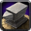 Blacksmithing |
Sockets: Bracers, Gloves | +320 Main Stat or +480 Stamina or +640 Any Secondary Stat |
| Enchanting | Rings Enchants | +320 Main Stat or +480 Stamina |
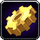 Engineering |
Gloves Tinker | +1920 Main Stat for 10s (1min CD) |
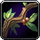 Herbalism |
Lifebloom spell | +2880 Haste for 20s (2 min CD) |
| Inscription | Better Shoulder Enchant | +320 Main Stat or +480 Stamina |
| Jewelcrafting | 2x Serpent's Eye Gems | +320 Main Stat or +480 Stamina or +320 Any secondary Stat |
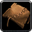 Leatherworking |
Better Bracer Enchants | +320 Main Stat or +750 Stamina (compared to +170 Dodge) |
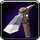 Mining |
Passive | +480 Stamina |
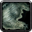 Skinning |
Passive | +480 Crit |
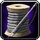 Tailoring |
Better Cloak Enchant | +2000 Int, +3000 Spirit, or +4000 AP proc for 15s (1min ICD) |
Reputation-Gated Recipes in MoP Classic
This table compiles MoP reputation-gated recipes by profession from this overview.
| Profession | Faction | Reputation | Notable Recipes / Unlocks |
|---|---|---|---|
| Alchemy | — | — | — |
| Blacksmithing | The Klaxxi | Honored | ilvl 476 Chest & Gloves; ilvl 463 Weapons. |
| Enchanting | Shado-Pan | Revered | Dancing Steel, Jade Spirit, River's Song (weapon enchants). |
| The August Celestials | Revered | Greater Agility, Super Intellect, Exceptional Strength (bracer enchants). | |
| Engineering | — | — | — |
| Inscription | — | — | — |
| Jewelcrafting | Order of the Cloud Serpent | Honored / Revered / Exalted | Panther mount designs (Jade/Sunstone at Honored, Sapphire/Ruby at Revered, Jeweled Onyx at Exalted). |
| Leatherworking | Golden Lotus | Honored | Leg Armor Kits; ilvl 476 Chest & Gloves. |
| Tailoring | Golden Lotus | Honored | Leg Spellthreads; ilvl 476 Chest & Gloves. |
| The August Celestials | Exalted | Royal Satchel (28-slot bag). |
Alchemy
Alchemy in MoP Classic keeps most of the familiar systems: you still choose a specialization and have a daily cooldown. There are no cauldrons, and most recipes are unlocked through crafting and discovery rather than from trainers.
Profession Bonus
You keep the 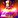
Unique Flask
Alchemist's Flask gives you flask bonuses without consuming one. Great for leveling or old content where using a real flask isn’t worth it.
Cauldron
No cauldrons in MoP. Everyone has to bring their own flasks to raids.
Specializations
Potion, Elixir, and Transmutation masteries are still around and work the same way as before.
Daily CD
 Transmute: Living Steel is your main daily cooldown. Living Steel is used for high-end crafts and every belt buckle, so this cooldown will be valuable all patch long.
Transmute: Living Steel is your main daily cooldown. Living Steel is used for high-end crafts and every belt buckle, so this cooldown will be valuable all patch long.
Trinket
No epic trinket this time. You only get the Zen Alchemist Stone, but it was solid in challenge modes back in retail MoP.
Full Alchemy Overview MoP Alchemy Leveling Guide
Blacksmithing
Blacksmithing in MoP Classic offers the same profession bonus as before, with extra gem sockets for bracers and gloves. You can craft epic ilvl 476 gear from Klaxxi reputation and higher ilvl 496 pieces from raid drops.
Profession Bonus
 Socket Bracer and
Socket Bracer and  Socket Gloves let you add an extra gem slot to both slots.
Socket Gloves let you add an extra gem slot to both slots.
Reputation Recipes
- ilvl 476 Gloves and Chest - The Klaxxi (Honored)
- ilvl 463 Weapons - The Klaxxi (Honored)
Raid Recipes
ilvl 496 Chest and Glove recipes drop in Mogu'shan Vaults, Terrace of Endless Spring, and Heart of Fear. These are BoE and can also be bought from the Auction House.
Full Blacksmithing Overview MoP Blacksmithing Leveling Guide
Enchanting
Enchanting in MoP Classic keeps the usual ring enchants as your profession bonus. You can convert materials up and down between tiers, and most formulas come from the trainer. High-end weapon and bracer enchants are gated behind Shado-Pan and August Celestials reputation.
Profession Bonus
 Enchant Ring - Greater Agility
Enchant Ring - Greater Agility- Enchant Ring - Greater Intellect
- Enchant Ring - Greater Stamina
- Enchant Ring - Greater Strength
New Conversions
Enchanters can now convert most MoP materials between tiers, giving more flexibility than before. But, you want to avoid having to shatter for the most part because you're losing mats when you convert down.
- Combining: 125 Spirit Dust = 25 Mysterious Essence = 5 Ethereal Shard = 1 Sha Crystal
- Shattering: 1 Sha Crystal = 2 Ethereal Shard = 6 Mysterious Essence = 18 Spirit Dust
Reputation Recipes
Most enchants are learned directly from trainers. High-end enchants require reputation:
Shado-Pan - Revered- Formula: Enchant Weapon - Dancing Steel
- Formula: Enchant Weapon - Jade Spirit
- Formula: Enchant Weapon - River's Song
- Formula: Enchant Bracer - Greater Agility
- Formula: Enchant Bracer - Exceptional Strength
- Formula: Enchant Bracer - Super Intellect
Full Enchanting Overview MoP Enchanting Leveling Guide
Engineering
Engineering in MoP Classic delivers powerful glove tinkers, handy utility gadgets, and BoP epic goggles.
Profession Bonus
 Synapse Springs - 1920 main stat for 10s
Synapse Springs - 1920 main stat for 10s- Phase Fingers - 2880 Dodge for 10s
Epic Goggles
You can craft BoP ilvl 476 epic goggles. They have two unique cogwheel sockets, so you can customize the secondary stats you want.
Teleporter
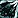
Other Tinkers
- Cloak - Goblin Glider - Deploy a goblin glider and fall slowly for 30 sec. (5 min CD)
- Belt - Watergliding Jets - Walk on water and swim quickly for 12 sec. (30 sec CD)
Full Engineering Overview MoP Engineering Leveling Guide
Inscription
Inscription in MoP Classic gives exclusive shoulder enchants, Darkmoon Cards, epic off-hands, and a daily Scroll of Wisdom.
Profession Bonus
 Secret Tiger Fang Inscription
Secret Tiger Fang Inscription- Secret Ox Horn Inscription
- Secret Tiger Claw Inscription
- Secret Crane Wing Inscription
Shoulder Enchants
Scribes are the only source for shoulder enchants in MoP. These replace the old rep enchants.
Darkmoon Cards
You can discover one random Darkmoon Card every day with  Darkmoon Card of Mists.
Darkmoon Card of Mists.
 Crane Deck - Trinket:
Crane Deck - Trinket:  Relic of Chi-Ji (heal)
Relic of Chi-Ji (heal) Ox Deck - Trinket:
Ox Deck - Trinket:  Relic of Niuzao (tank)
Relic of Niuzao (tank) Serpent Deck - Trinket:
Serpent Deck - Trinket:  Relic of Yu'lon (spell)
Relic of Yu'lon (spell) Tiger Deck - Trinket:
Tiger Deck - Trinket:  Relic of Xuen / Relic of Xuen (melee)
Relic of Xuen / Relic of Xuen (melee)
Epic Off-hands
Craftable ilvl 476 BoE off-hands for healers and casters. Each requires a Scroll of Wisdom. You can learn these from the trainer.
Bind to account Staffs
These bind to your account, so you can send them to your other characters when you get a better one later. You can't sell them on the auction house.
 Inscribed Crane Staff - healer
Inscribed Crane Staff - healer Inscribed Serpent Staff - spell dps
Inscribed Serpent Staff - spell dps Inscribed Tiger Staff - Agility dps
Inscribed Tiger Staff - Agility dps
Daily CD
 Scroll of Wisdom is your daily CD. This scroll will always proc a glyph you haven't learned.
Scroll of Wisdom is your daily CD. This scroll will always proc a glyph you haven't learned.  Scroll of Wisdom is BoP and used in Darkmoon Cards and all high level crafted gear.
Scroll of Wisdom is BoP and used in Darkmoon Cards and all high level crafted gear.
Full Inscription Overview MoP Inscription Leveling Guide
Jewelcrafting
Jewelcrafting in MoP Classic uses daily discoveries for gem cuts, JC-only gems, and the panther mounts via Cloud Serpent reputation.
Profession Perk
2x JC-only gems
Learning Gem Recipes
You no longer need to do daily quests. Instead, you discover gem recipes by using spells like  Primordial Ruby. This discovery system has a shared daily cooldown across all six gem colors, so you can only learn one new cut per day.
Primordial Ruby. This discovery system has a shared daily cooldown across all six gem colors, so you can only learn one new cut per day.
You can bypass this cooldown with  Secrets of the Stone, but it costs a
Secrets of the Stone, but it costs a  Spirit of Harmony, which will be quite expensive early on.
Spirit of Harmony, which will be quite expensive early on.
Mounts
Jewelcrafters can craft a new flying mount in MoP Classic: the 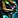
Each one requires an Orb of Mystery (20,000 gold), so crafting the full set is very expensive.
You can buy the recipes from San Redscale with Order of the Cloud Serpent reputation:
 Design: Jade Panther – Honored
Design: Jade Panther – Honored- Design: Sunstone Panther – Honored
- Design: Sapphire Panther – Revered
- Design: Ruby Panther – Revered
- Design: Jeweled Onyx Panther – Exalted
Full Jewelcrafting Overview MoP Jewelcrafting Leveling Guide
Leatherworking
Leatherworking in MoP Classic offers better bracer enchants, cheap leg reinforcements, and Golden Lotus patterns for early epics.
Profession Bonus
- Fur Lining - Agility +500
- Fur Lining - Intellect +500
- Fur Lining - Strength +500
- Fur Lining - Stamina +750
Cheap Leg Enchants
These give the same bonus as the normal Leg Enchants, but they are basically free to make compared to the normal ones.
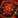
Draconic Leg Reinforcements - +285 Strength, +165 Crit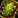
Heavy Leg Reinforcements - +430 Stamina, +165 Dodge- Primal Leg Reinforcements - +285 Agility, +165 Crit
Reputation Recipes
Several recipes are unlocked through the Golden Lotus faction:
- Leg Armor Kits (Tank, Melee) – Honored
- ilvl 476 Chests and Gloves – Honored
Raid Recipes
ilvl 496 Chest and Gloves recipes drop from Mogu'shan Vaults, Heart of Fear, and Terrace of Endless Spring. These recipes are not Bind on Pickup, so you can also buy them from the Auction House.
Full Leatherworking Overview MoP Leatherworking Leveling Guide
Tailoring
Tailoring in MoP Classic revolves around cloak enchants, cheap leg enchants, and making bags for the new expansion.
Profession Bonus
 Darkglow Embroidery - Spirit
Darkglow Embroidery - Spirit- Lightweave Embroidery - Intellect
- Swordguard Embroidery - Attack Power
Daily CD
 Imperial Silk is your daily cooldown to create Imperial Silk. You can bypass this CD with Song of Harmony, but it costs 3x
Imperial Silk is your daily cooldown to create Imperial Silk. You can bypass this CD with Song of Harmony, but it costs 3x  Spirit of Harmony, which will be quite expensive early on.
Spirit of Harmony, which will be quite expensive early on.
Cheap Leg Enchants
Tailors can use these leg enchants on their own gear. They give the same stats as regular enchants but only cost 3x  Eternium Thread.
Eternium Thread.
Reputation Recipes
Several recipes are unlocked through factions:
- Golden Lotus: Leg Armor Kits (Healer, Spell DPS) – Honored
- Golden Lotus: ilvl 476 Chests and Gloves – Honored
- The August Celestials:
 Royal Satchel (28-slot BoE bag) – Exalted
Royal Satchel (28-slot BoE bag) – Exalted
Raid Recipes
ilvl 496 Chest and Gloves recipes drop from Mogu'shan Vaults, Heart of Fear, and Terrace of Endless Spring. These recipes are not Bind on Pickup, so you can also buy them from the Auction House.